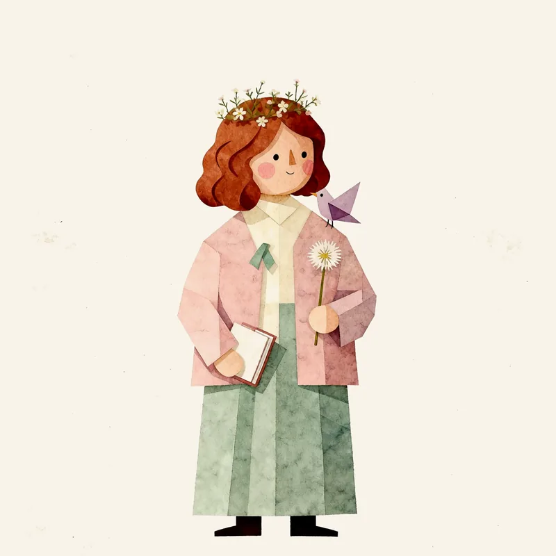
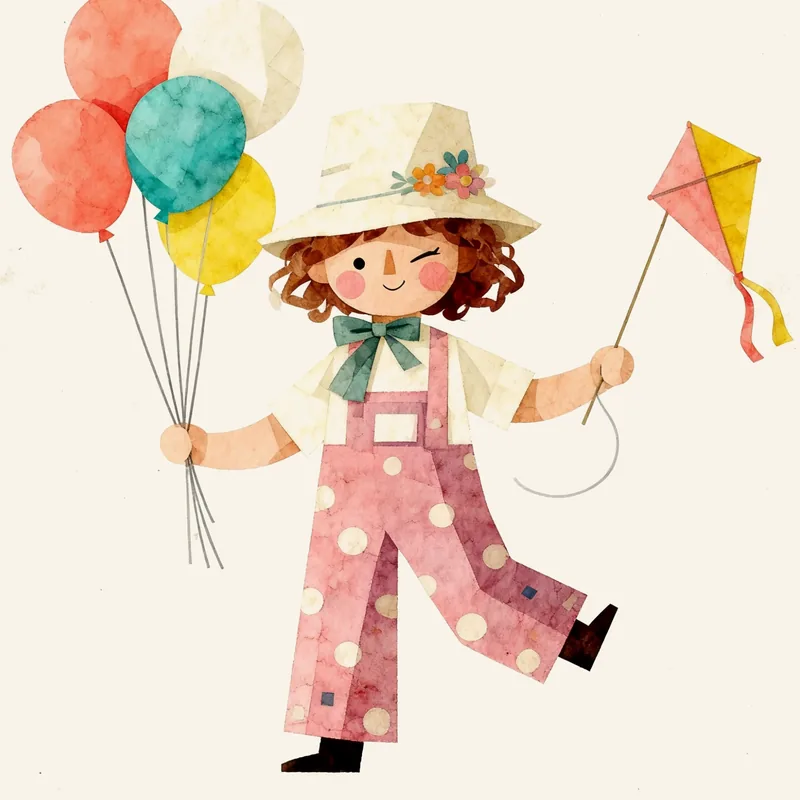

16TYPE+
16タイプ、
診断するたびに
結果が変わる人へ。
あなたの中には、生まれつきと今の
2つのタイプがあります。

INFP1回目
ENFP2回目どれ？ INFJ3回目
INFJ3回目無料・約30秒 · 16typeplus.jp
あなたの中には、生まれつきと今の
2つのタイプがあります。

INFP1回目
ENFP2回目どれ？INFJ3回目無料・約30秒 · 16typeplus.jp
You have two types: the one
you were born with and the one you are now.
INFJ3rd tryFree · About 30 sec · 16typeplus.jp/en
당신 안에는 타고난 타입과 지금의 타입,
두 가지가 있어요.
INFJ3회차무료 · 약 30초 · 16typeplus.jp/ko